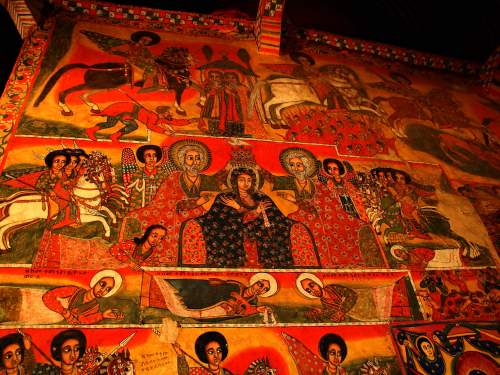
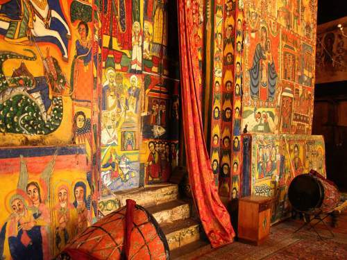
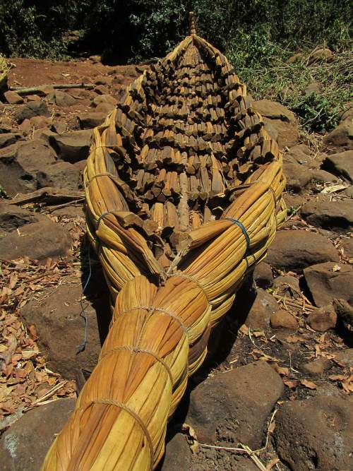
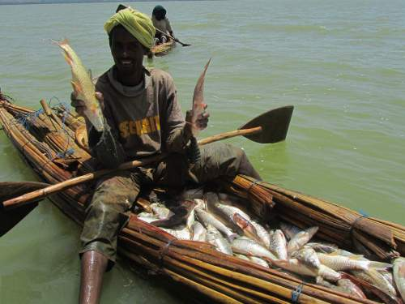
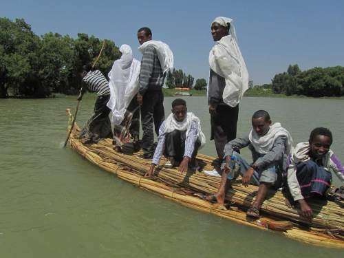
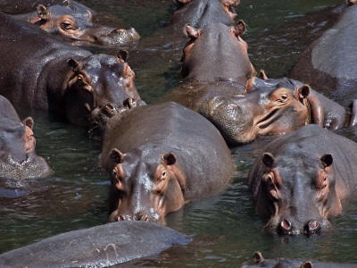

Bahir Dar and Lake Tana Monasteries
   Bahir Dar
At a distance of 550k from capital Addis Ababa, the lake and its 12 short tributaries are the source of the Blue Nile and with its size of about 66km long and 84km, 350,000ha, the largest lake of Ethiopia. At an elevation of 1,788 masl, and located in the largely Ethiopian Orthodox Amhara Region, the 14m deep lake with about 45 islands - depending on the level of the lake - 8 of which are the home to historical monasteries and churches.
Top 10 Lake Tana Monasteries, Ethiopia
Some are only open to men, but the beautiful ones are open to all.
- Azuwa Maryam Monastery
- Bet Maryam Monastery
- Bet Selassie
- Daga Estefanos
- Debre Maryam
- Kebran Gabriel
- Narga Selassie
- Tana Cherkos
- Tekla Haimanot
- Ura Kidane Mehret Monastery
-
 Lake Tana Monasteries
Some Lake Tana monasteries are only accessible to men; very disappointing to women. However, not to despair, some beautiful ones are open to all. Daily excursions are organized out of Bahir Dar to two churches (Betre Maryam on the Zege peninsula and one on Dek Island) where both sexes are welcome to the inner and outer ambulatories and the treasure rooms. In those treasuries are many ancient manuscripts and precious pieces of religious art as well as royal jewelry and other representative objects.
The Lake was formed about 5 million years ago when lava blocked the about 60 streams and rivers of which , Megech, Gumara, Rib Rivers and Gilgel Abbay (Little Nile River)are the main tributaries. The latter, is attributed to be the source of the Blue Nile (Abbay River), the longest of the lake’s tributaries, as it drains Mount Amedamit, south of the lake. Over the last few centuries the lake's water level has fallen about 2m but is now regulated with a control dam where it discharges into the Blue Nile and falls over the Blue Nile Falls, some 40km down stream.
Among the mammals, the Hippopotamus is the most eye-catching species, often seen in the wetlands of the discharge into the Blue Nile River. Obviously, numerous wetland birds, such as the great white pelican and African darter, reside at Lake Tana. It is also an important wintering ground for many Palearctic migrant water birds. There are no crocodiles, but the African soft-shell turtle has been recorded near the Blue Nile outflow from the lake. There are fifteen species of mollusks, including one endemic as well as an endemic freshwater sponge. The Ethiopian churches are the custodians of both religious and royal treasures such as royal crowns, ancient bibles, historical art, sacred relics, including the remains of royals, etc.